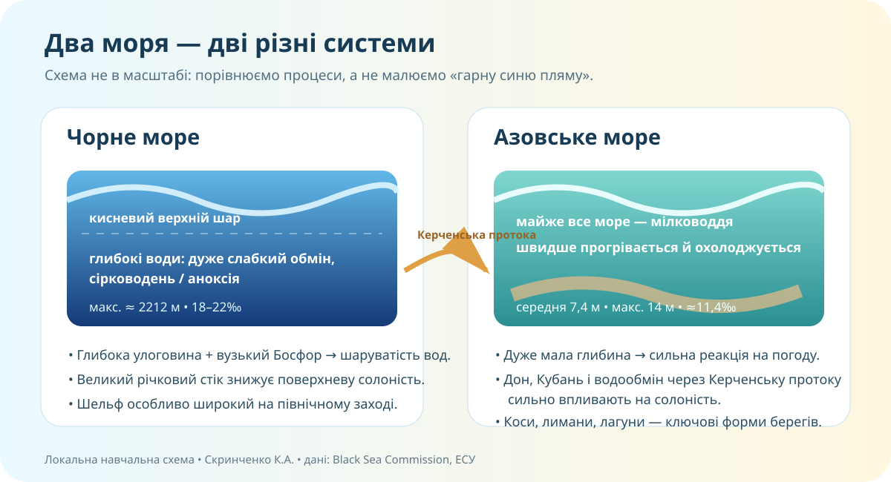

Чому два сусідні моря настільки різні?
Азовське море відділене від Чорного лише Керченською протокою. Але одне дуже мілке, інше — глибоке; одне сильніше реагує на зиму й річковий стік, інше має майже безкисневі глибини.

Локальна схема уроку. Дані: Black Sea Commission, Енциклопедія Сучасної України.
Спершу — простір
OpenStreetMap. Кримський півострів є невід’ємною частиною України.
Картографічний протокол
- Знайдіть Босфор, Керченську протоку, Кримський півострів, Дунай, Дністер, Дніпро.
- Простежте шлях від Азовського моря до Атлантики.
- Порівняйте, де берегова лінія утворює коси, лимани, затоки.
- Сформулюйте два висновки, які видно саме з карти, а не з пам’яті.
Порівняйте, а не перепишіть
* Black Sea Commission; ** Енциклопедія Сучасної України. Це орієнтири для аналізу, а не «чотири цифри, які треба мученицьки завчити».
| Ознака | Чорне море | Азовське море | Що це змінює? |
|---|---|---|---|
| Глибина | глибоководне | дуже мілководне | |
| Солоність | прибл. 18–22‰ у відкритих водах | середня близько 11,4‰, мінлива | |
| Річковий вплив | Дунай, Дніпро, Дністер, Пд. Буг та ін. | Дон, Кубань та ін. | |
| Береги | лимани, затоки, абразійні й акумулятивні ділянки | коси, мілкі затоки, лагуни |
Сірководень: «отруйне море» чи нормальна стратифікація?
У Чорному морі кисень зосереджений переважно у верхньому шарі. Глибші води слабко змішуються з поверхневими й містять сірководень. UNEP зазначає, що близько 90% нижньої частини Чорного моря є безкисневою.
Міф-чек: чи небезпечно пірнати?
Сірководневі глибокі води не означають, що біля пляжу «плаває отрута». Для шкільного висновку важливо розділити поверхневий кисневий шар і глибоководну аноксичну зону.

Чорноморський берег
Якщо зовнішнє фото не завантажиться, завдання нижче не втрачає змісту.
Шукайте сліди абразії, урвища, пляж, акумуляцію наносів.

Азовський берег
Арабатська Стрілка — піщана коса завдовжки близько 115 км, яка відокремлює Сиваш від Азовського моря.
Форма → процес
Коса — не «півострів, який просто так намалювався». Її ростять переміщення наносів хвилями й течіями.
Звідки береться проблема моря?
Морська екосистема отримує вплив не тільки з узбережжя. Річки приносять у море воду, завислі речовини, поживні сполуки та забруднювачі з величезних басейнів.
- Надлишок азоту й фосфору → активний ріст водоростей.
- Після відмирання органіки її розкладають мікроорганізми.
- На розклад витрачається кисень.
- У мілких затоках це може створювати дефіцит кисню для тварин.
Ресурс чи ризик?
Зберіть картину в систему
Чорне море — внутрішнє море Атлантичного басейну, сполучене із Середземним морем через Босфор → Мармурове море → Дарданелли. Воно має глибоку улоговину; північно-західний шельф значно ширший. Річковий стік знижує солоність поверхневих вод. Через стійку вертикальну стратифікацію глибокі води слабко обмінюються з поверхнею й є переважно безкисневими.
Азовське море сполучене з Чорним Керченською протокою. Воно дуже мілке, тому швидко прогрівається й охолоджується, у суворі зими замерзає значно сильніше, а солоність помітно залежить від річкового стоку й водообміну. Для узбережжя характерні довгі піщані коси, лимани й лагунні комплекси.
Головна ідея уроку: природний комплекс моря визначає не одна цифра і не одна причина. Географічне положення, форма басейну, глибина, протоки, річковий стік, атмосферні процеси та діяльність людини працюють разом.
Азовське море за хвилину
Подивіться короткий ролик і знайдіть у ньому одне твердження, яке Ви вже можете перевірити даними, та одне, яке потребує незалежного джерела.
Надійне джерело ≠ перше посилання
Для числових характеристик моря надавайте перевагу міжурядовим установам, академічним енциклопедіям, науковим установам і первинним даним. Відео — хороший старт для питання, але не остання інстанція.
Доведіть твердження
Питання: чому Азовське море значно сильніше й швидше реагує на сезонні зміни та річковий стік, ніж глибоководна частина Чорного моря?
§43 + доказове міні-дослідження
Опрацюйте електронний §43 і виберіть одну тему: «Сірководневий горизонт», «Арабатська Стрілка», «Небезпечні мешканці Чорного моря», «Екологічна проблема морського басейну».
Результат: 5–7 речень + одне посилання на надійне джерело + один факт/число + висновок «чому це важливо».